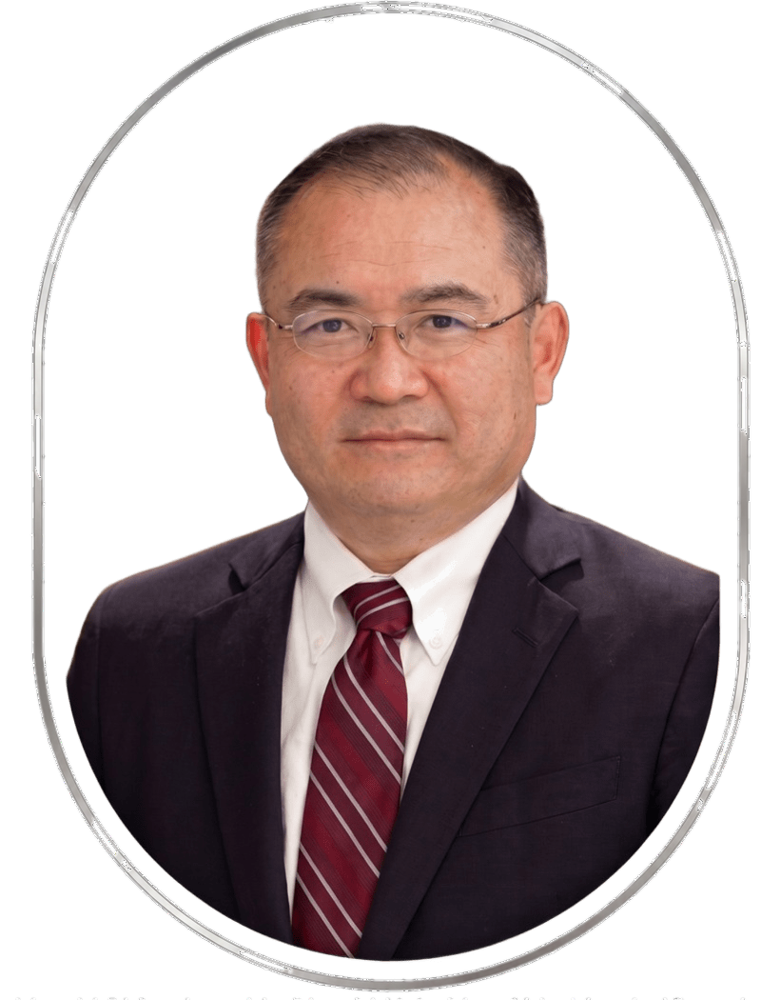

The people and the atmosphere. Introducing the members of our laboratory.

Director, Waseda Research Institute for Sustainable Environmental and Energy Society
| Born May 26, 1968 | |
| March 1987 | Graduated from Shizuoka Prefectural Hamamatsu Kita High School |
| March 1992 | B.Eng., Department of Mechanical Engineering, School of Science and Engineering, Waseda University |
| March 1994 | M.Eng., Graduate School of Science and Engineering, Waseda University |
| March 1998 | Dr.Eng., Waseda University |
| January 1999 | Researcher, Agency of Industrial Science and Technology (as a Special Postdoctoral Researcher in Science and Technology) |
| April 2005 | Visiting Researcher, University of Illinois, USA |
| April 2008 | Professor, Waseda University |
| February 2011 | Honorary Professor, University of the Philippines |
| January 2014 | Visiting Professor, University of Indonesia |
| October 2014 | Academic Affairs Chief, Faculty of Science and Engineering, Waseda University |
| April 2017 | Director, Institute of Thermal Energy Conversion Engineering and Mathematics, Organization for the Strategic Coordination of Research and Intellectual Property |
| September 2018 | Director, Institute for Mathematical Science of Energy Conversion Engineering, Open Innovation Strategy Institute |
| April 2022 | Director, Waseda Research Institute for Sustainable Environmental and Energy Society, Waseda University |
| 2022 | FY2022 Commendation for Science and Technology by the Minister of Education, Culture, Sports, Science and Technology (MEXT), Science and Technology Award |
| 2022 | FY2021 Waseda Research Award (Promotion of Large-Scale Research Projects) |
| 2021 | FY2020 Waseda Research Award (Promotion of Large-Scale Research Projects) |
| 2020 | FY2019 Waseda Research Award (Promotion of Large-Scale Research Projects) |
| 2012 | JSME Award (Technology) |
| 2011 | Philippines ERDT Best Presentation Award |
| 2010 | Korea SAREK Best Paper Award |
| 2010 | JSRAE Best Paper Award |
| 2002 | JSME Young Engineers Award |
| Professor Emeritus | Sunao Kawai |
| Associate Professor | Niccolo Giannetti |
| Lecturer | Takeshige Kin／Kim Cheolhwan／IBRAHIM Nasiru Ishaq／Chitose Tanaka |
| Research Associate | Damiano Dondini |
| Doctoral Students | Haruka Ajiki／Kento Maeda |
| Master's Students (2nd Year) | Yang Yuelin／Daichi Maruno／Tsubasa Saito／Kanta Shinohara／Zhang Haoshuo／Lin Chienchieh |
| Master's Students (1st Year) | Heng Zhangyan／Jourdan Gabriel Alexander／Reon Kobayashi／Kiri Shiromizu／Yuki Nagai／Koharu Yokoo／Zhao Jiannan／Firdaus Nazuwan Hafiz |
| Undergraduate Students (4th Year) | Kokoro Marutani／Nariaki Kae／Taiyo Kariya／Eiho Koremura／Chika Saito／Haruto Shibuya／Hayato Takigawa |
| Undergraduate Students (3rd Year) | (assignment expected September) |
| Research Fellows | Kiyoshi Kagawa／Eiji Niwa／Yoichi Miyaoka／Naohiko Ishibashi／Jongsu Jeong／Richard Jayson Varela／John Carlo Solomon Garcia／Kenji Matsuda／Kuniyuki Nishimura／Shigeharu Taira／Yohei Kayukawa／Kenji Tojo／Yonezo Ikumi／Nobuyuki Inoue／Koji Mori／Yukinobu Takahashi／Hiroo Nakamura／Hiroshi Takada／Myeongwoo Lee |
Updated April 2026